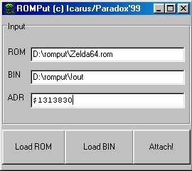

|
First of all - the tools: |
|
| N64Gfx v2.0 (by EAR_CLOCK, CesarB & Hyllian) - DOS. | |
A small program to EXPORT uncompressed graphics from rom, and for IMPORTING it, (edited or not), back to rom.
Works only with *.png files (output / input).
Also can be used with *.dat files (Zelda Extractor - see below), to export / import *.png's from those *.dat's.
|
|
| Sprite Viewer v1.65 (by Peekin) - DOS | |
Program to search & view graphics in N64 rom (works with NES, SNES, SEGA, GB, GBC, N64 roms)
(Also needed to find other info, such as offset, image size, etc - to use with n64gfx).
For N64 roms use the following modes to search: linear4, linear8, n64high, n64true
This tool shows only uncompressed graphics in n64 roms.
|
|
| Macromedia Fireworks v4.0.1 / Adobe Photoshop - Windows | |
Graphics editors, required to edit *.png images (Corel PhotoPaint seems to work too...) Fireworks's native file format is *.png, - this is what n64gfs uses. But - I preffer Adobe Photoshop (from v 5.0 to 7.0 - doesn't matter). This editor is MUCH better and do everything with bitmaps. I suggest you to use photoshop for correct and easiest editing of png files. |
|
| Hexposure v0.44b (by SnowBro) - DOS | |
Hex editor.
I make a translation right in it. Very comfotable tool, I think.
Both Zelda has ASCII, so it's not nessesary to make tables.
Translate directly in rom. (or if you'll prefer scripts - use it, if you'll figure out, how to make/insert scripts with no bugs in game)
|
|
| Zelda Extractor (by _Demo_) - DOS | |
A small tool to UNCOMPRESS all compressed graphics in both Zelda. (also has an add-on - JPG extractor (not included)).
(look at dextrose.com for it - it extracts some backgrounds from Zelda (not textures)).
It creates 1456 *.dat files for Ocarina Of Time and 2033 *.dat files - for Majora's Mask after extraction.
Each DAT file contains all found graphics - compressed and uncompresed. But compressed graphics are viewable in Sprite Viewer now.
The name of *.dat - is the OFFSET of this graphics in rom.
|
|
| Yaz0 Kit (by PSA) - DOS |
?
|
I looked for such tool for a looooong time.... But here is it (thanks to _Demo_ and BIG THANKS to author of this tool, if I could contact him...)
Uncompressor and COMPRESSOR of graphics !!! WORKS ONLY WITH BOTH ZELDA (Yaz0 - it's a zelda compression style, I guess)
Forget about uncompressor - it works similar to zelda extractor, but filename of unpacked data - is just number, so it's impossible to
find needed offset. Use Zelda Extractor only (for uncompress).
Compressor (Yaz0comp) - works only with UNP files. No extension, just "unp". I'll explain it below.
To compress - just rename *.dat file to "unp" (with no quotes)
|
|
| Romput v1.0 (by Icarus) - DOS | |
This is a small proggy to insert any data into n64 rom at given offset. Was written for inserting custom intros, but works well in our case, too.
You'll need this to insert edited and compresed *.dat back into the rom.
|
|
|
#1. Explanation of editing UNCOMPRESSED graphics. (there are fonts, action icon text, items names, some other stuff) |
|
(I'll explain it in example of text, which appears on "Action icon" in game, but we'll translate it to russian here ): |
|
| Graphics search : |
Tools:
Sprite Viewer
|
Take your (not byteswapped, version 1.0 USA) Zelda64 rom.
Drag it onto Sprite Vewer ("SV" later) (or in command promt: sv.exe zelda64.rom)
and start scrolling (PgDown key). (PgUp - to scroll up). Press ] or [ (it changes width of picture, and scrolling works faster).
Press PageDown until you'll reach 0x8C4D71 offset.
Now choose Linear 4 mode (press 4) and choose Gray palette (press P several times).
Now press [ to make a width of the image become 48 pixels. You screen should now look like this:
Offset Image size (witdh) Mode Palette
To find another graphics - just search in rom like above, in linear4, linear8, n64high, n64true modes only.
The best quality you can see in Gray palette. In case of n64high and n64true modes - in True color (or high color) palette.
Here is example of how some inventory items looks like (but we don't need to translate them :)):
|
|
| Export graphics from rom: |
Tools:
N64Gfx
|
Remember offset, image size, mode and palette (0x8C4D71, 48, linear 4, gray). Now close SV and open N64gfx (frontend)
Forget about Palmatch tab. It doesn't work at all.
(Don't forget to put you rom and n64gfx at the same folder)
Now fill all fields like this (type you rom name, but 8 symbols in filename is reccomended) :
See the Rom name with (ext) field? Don't type the whole path to rom,
(like - C:/n64translate/n64gfx/zelda64.rom). If you'll type all path - n64gfx will do nothing. A small bug...
Also in Palette type field almost everytime choose builtin igray. (inverted gray). (Builtin gray seems to be a bit bugged)
Also default palette works fine (if you'll need colour image, try to use this palette - as is).
Type the first number: 48 - in Image size field (this is a width of image), just like you've seen in SV.
Second number - experiment with this.... In our case it's 465 (lenghts of image).
(But sometimes this numbers should be divisible to each other).
OK - filled all fields, press Run N64gfx button. "action-icon.png" file will be created (fig.1)
Other n64gfx fields: Type (tile or block) - use tile, and in "size" field type: 48 x 48.
Sometimes, when you need to extract an image, say, in size of 32 x 16 - type 32 x 16 in "tile" field and in "image size" field too.
fig. 1 (fragment)
|
|
| Editing: |
Tools:
Photoshop
(or Fireworks)
|
You can use fireworsk or photoshop. But photoshop is much better, as I said above.
Photoshop (v5.0, v5.5, v6.0, v7.0 .....)
Now - PAINT :), saving original palette.
To use original image palette, open action-icon.png in Photoshop, (it exported in Indexed Color mode from rom),
go to Image menu, choose Mode -> Color Table, press Save. Name the file, say, Action.act.
Save action-icon.png as action-rus.png (or action-yourlanguage.png :)
(but better save it in *.psd format to use all of Photoshop features during editing).
Now, using your photoshop an drawing skills, repaint letters, similar to fig. 2.
fig. 2 (fragment)
It is much comfortable to edit in RGB color mode, which supports layers and other photoshop's features,
unavailable in indexed color. (To change colour moge go to: Image -> Mode -> RGB color).
...................... (Draw... And don't forget about this light-grey outline around the letters - this will be black outline around this text in game).
OK, you finished your painting - now flatten image if you used layers (Layers -> Flatten Image in menu)
Next - choose back indexed color mode. (Image -> Mode -> Indexed color).
A small window appers: On Palette tab choose Custom.
Another small window appears, this one with palette. Press Load and open saved before Action.act file.
Now press Πand save file as action-rus(yourlanguage).png
(another small window appears - png options. Choose interlaced - none here).
That's it ! Now you can import this edited png file back to zelda rom *.
* It's better to rename now action-rus.png to action2.png or so.
(Sometimes, during import, N64gfx can't see the file, which name is longer than 8 symbols... DOS shit.....
8 symbols maximum in file name. I noticed this bug doing import in "builtin igray" mode).
In two words - always use DOS-style filenames to prevent problems.
Fireworks (v4.0.1)
Create (edit) in fireworks, or open file, preferred before in other editor.
Image size of the edited file should be exactly like original.
If you'll make a mistake even on 1 pixel - n64gfx will do nothing.
In our case: image size must be 48 ı 465 pixels, 72 dpi.
Go to File menu, choose Export Preview. Now choose all parameters for export.
I experimented a lot (before I started to use Photoshop for editing).
Here is the parameters for the best image quality in game:
PNG 8, Grayscale 16 colors, Dither 100% (sometimes - 0%), Index transparency.
Press the Export... button, resave file.
(or give it another (DOS-style) name, (to be on the safe side)).
|
|
| Import graphics back to rom: |
Tools:
N64Gfx
|
Now open n64gfx frontend, (put action2.png, N64Gfx and rom into the same folder (guess you know this already :)).
Now fill all fields in n64gfx exactly like you did for export, but in Operation field choose import.
And in Image name *.png field - type the name of your edited png - action2.png).
That's it. Now press this big button: Run N64gfx. We did it :)
Now all text on "Action Icon" should be in your language.
(To be on the safe side, open rom in SV, and check all changes at offset, which you already know (0x8C4D71).
Should be something like this:
|
|
| Redrawing fonts: |
Tools:
Sprite
Viewer / N64Gfx / Photoshop (Fireworks)
|
The main part of translation - redrawing fonts - is similar to Action Icon text.
The only thing - letters has a bit blurred edges, that means a bit harder editing...
In n64gfx, in Type field, you can choose Block, to make exported font easier to edit (much image compact size: see the screenshot below),
but in case of "block" feature you must figure out, what to type in Image Size field. Numbers must be divisible to each other now.
There are two fonts in both Zelda: the first one used when you choose player name* and for PRESS START phrase**.
The second one (the main one) - used in dialogues. So, when you translate - you translate this font
Here is how this second fond looks like (already exported to *.png): ***
* The player name you choose at the beginning of the game appears like "0F" in hex editor. So you may be unable to declense
it in your own language. In case of russian it's impossible to use declension similar to english language.
Example: you choose the player name Anton.
In game it will be like "Anton's records", "Help Anton to save Hyrule", "Anton's house" - [Anton] everywere, + 's if declension is needed.
In hex editor it looks very simple: any name = 0F or 0F's if declension. So take into consideration your own language when translating.
We just replaced the player name to Link (guess you know who he is :)) and have no problems with names at all.
The name choosen at the beginning means just a name of game file you play with (in our russian translation).
** To search PRESS START phrase use relative search feature in hexposure (F6).
*** here is a n64gfx options for this main font (dialogue font):
offset - 0x906f70, mode - linear 4, type - block, size - 16 x 16, image size - 160 x 224, palette type - builtin igray
|
|
Repaint letters, taking your alfabet into consideration.
I painted them like there are in russian/eglish keyboard (almost). But I guess that you know, what english letter change to your ones.
IMPORTANT:
Repaint letters, paying attention at their WIDTH.
You must paint new letter EXACTLY with the width of english letter that you replace.
If you don't do this - spaces between letters will be very small or very big in game and text will look crappy and hard to read.
Theorically, if you know where to find table of letter's width in rom and how to change it - this will be very good.
I don't know how. If you'll figure it out - let me know, please.
|
|
| Translation: |
Tools:
Hexposure
|
When both font are repainted and inserted back to rom - we can start a translation, at last.
Open Hexposure *, open zelda rom, and search for text.
Looks kike this:
I guess that you know hot to use hexposure. If no - grab some tutorials, docs, etc - at zophar's domain or romhacking.org
Translate in right column. For example, "30 Rupees" you'll translate like .... hm, don't know your language :)
Type english letters, paying attention on how you repainted you font. (in hexposure translated text will look like
some abracadabra in english (like dfvuwbsjsb ....) bla bla.... But it'll appear on your language :)
(If you know the easier way, and translating using scripts, whatever - you'll translate like you prefer)
Translate..................
Try not to move some pointers, except of "next line" pointer (01), "end text block" pointer (04) , "end of dialogue" (02) and
other similar pointers.
Result of translation looks like this or this :)
In the middle column - Hex data (type pointers numbers here). In left column is offset.
Some words about pointers (all that I know):
When text is coloured - there are 41 (red), 44 (blue), 43 (yellow, if i remember correct), and so on. It's not too difficult to figure it out.
End of any color - 40.
Example: "You got recovery heart"
In hexposure it looks like this: "You got .Arecovery heart.@" ( .A = red colour (05 41), .@ = end of any colour (05 40) )
There are tons of pointers which explains to game:
a speed of displaying text, centering text, text background - colour and transparency, etc, etc, etc....
I try to leave them on their places, otherwise the game may hang or display some garbage instead of text or text background.
But I'm not experienced with pointers :)
* You can use another hex editors if you preffer them more than hexposure, such as Thingy or Hex Workshop. You choose....
|
|
|
#2. Explanation of editing COMPRESSED graphics:
|
|
| Ucompressing graphics: |
Tools:
Zelda
Extractor
|
There are lot of graphics in Zeldas that are compressed. There are some stuff in subscreens (titles, etc), places names at the center of screen
(appears when you entering corresponding area in game (example), bosses names, etc...
It is impossible to edit it like explained above, but now you can do this :)
Take your Zelda rom, take Zelda Extractor proggy, put it into the same folder.
Now in command line only (or make a *.bat file) type: zextract zelda64.rom
Extractor will think a bit... and will create 1456 *.dat files in your folder. This is it. All compressed graphics, but now it's uncompressed.
Filename of *.dat = offset, where this data resides in rom. You'll need this offsets later.
Ok, now the most annoying part - finding needed graphics and sorting it ...
|
|
| Searching : |
Tools:
Sprite
Viewer
|
Same like you search directly in rom (like uncompressed, explained above), but now you'll need to check in SV all this 1456 files !
I spend 2 days for that :-/
But - I'll make you life easier. Here there are all of dat's that you may need for redrawing. Thanks to me :p
Dat files & n64gfx options - for Ocarina of Time
--------------------------------------------------------------------------
BIG PLACES NAMES (appears at the center of screen when you enter this area):
There are files at 6.75 kb (6.912 bytes)
(I found 57 of them. I think that's all).
Just sort all dats by size - and you'll find them easily).
n64gfx export/import stuff for all this names:
0x000d80
tile - 144 x 24
size - 144 x 24
linear8
builtiin igray
MAIN GAME MENU - 1313830.dat
==============================
n64gfx stuff for some of main menu parts:
==============================
"options" submenu:
------------------------------
Sound
********
0x008c78
tile - 64 x 64
size - 64 x 12
mode - linear8
palette - igray
Check Brightness
*********************
0x0349e1
tile - 96 x 96
size - 96 x 14
mode - linear8
palette - igray
Name?
********
0x032700
linear8
tile 56 x 56
size 56 x 16
palette - igray
main menu stuff (when selecting a filename):
---------------------------------------------------------------
Text in menu (annotations, confirmations, etc)
*****************************************************
0x02b000
linear8
tile 128 x 128
size 128 x 238
igray
A-Decide * B-Cancel
************************
0x034080
linear8
tile - 144 x 144
image size - 144 x 16
igray
ALL COMPRESSED DATA IN SUBSCREENS - 85d840.dat
====================
n64gfx stuff for subscreens:
====================
To Map
To Equipment
To Quest Status
To Select Item
****************
linear8
0x004900
Tile 128 x 128
Size 128 x 63
Builtin Igray
Would you like to save/saved
*********************************
linear8
0x006880
Tile 152 x 152
Size 152 x 32
Builtin Igray
To Equip
**********
linear8
0x003c35
Tile 56 x 56
Size 56 x 16
Builtin Igray
To Decide
************
linear8
0x003fbf
Tile 64 x 64
Size 64 x 14
Builtin Igray
To Play Melody
******************
linear8
0x004380
Tile 80 x 80
Size 80 x 16
Builtin Igray
Yes - No
**********
linear8
0x007b80
tile 48 x 48
Size 48 x 48 ? (forgot this)
Builtin igray
Subscreen titles (those emboss things)
- I spent whole day to redraw them and to make them readable in game.
I just used "Pragmatica" font, no emboss, black color
(in UltraHle it looks good, but in PJ64 - it's transparent, no black....)
EQUIPMENT
MAP
SELECT ITEM
QUEST STATUS
SAVE
********************
linear8
0x008280
tile 80 x 80
size 80 x 280
Default
Dungeon's names in map subscreens
*******************************************
linear8
0x000000
tile 96 x 96
size 96 x 158
Builtin igray
GAME OVER, continue playing? - 856b90.dat
ZELDA LOGO SCREEN, (c) nintendo 1998, the legend of, ocarina of time - 11cd140.dat
n64gfx stuff for logo:
***********************
0x000300
tile - 160x160
size - 160x160
mode - n64true
palette - default
n64gfx stuff for "(c) 1998 Nintendo":
****************************************
0x019400
tile - 128x128
size - 128x16
mode - linear8
palette - builtin igray
ALL BOSSES NAMES (that appears, when you first enter boss room in dungeon):
Gohma: E21700.dat
Dodongo: De9480.dat
Barinade: F8ab00.dat
Phantom Ganon: Effc00.dat
Volvagia: Fd15b0.dat
Morpha: 1057590.dat
Bongo Bongo: 10fd5d0.dat
Twinrova sisters: 10c3be0.dat
Ganondorf: 10f6600.dat
Ganon: 11f9600.dat
n64gfx for bosses: also linear8, builtiin igray.
I haven't edit them now (because if you edit it's name, then load save to check your
changes in UltraHle - It's name still appears in english. Don't know why, maybe this data (bosses names) is stored in save files.
I only made GOHMA, the first boss - but I started the game from the begining to check changes - it works.
Maybe PJ64 helps to check this, but I didn't try it yet...
THE FIRST SCREEN IN GAME (NINTENDO 64) - 13120f0.dat
n64gfx stuff for the first screen:
***********************************
0x000192
linear8
tile - 192x32
size - 192x32
Builtin igray
"NAVI" (at C-UP button) - 13344C0.dat
(search in Linear4 mode).
------------------------------------------------------------------------------------------------------------------------------------------------------------------------------------------
That's all for Ocarina of Time (there are some other small stuff, that doesn't appear in emulator (check *.dat with main menu stuff).
I don't know any for Majora - try to ask Alex (he translates Majora. I have nothing to do with Majora)
------------------------------------------------------------------------------------------------------------------------------------------------------------------------------------------
Ok...
Now you have all needed stuff for editing compressed graphics. Be sure to check all described above in SV.
Looks like this in SV, for example (places names):
So, for full translation of Zelda:OoT you may need this: *
- places names at the center of the screen
- main geme menu (buttons & text)
- Nintendo64 title at the beginning
- main Zelda logo, if you want... **
- "Navi" on C-up button (appears when she wants to tell you something) ***
- some stuff in subscreens
- bosses names (appears when you first enter the boss room)
- "GAME OVER" (stores like shit (broken onto 4 parts) in *.dat)
- "The End" , Nintendo logo at the end of game, other small stuff.
* for Majora's Mask - about the same, but there are more compressed data in Majora.
(all items & masks names, for example - are compressed).
** if you change the logo, the game may totally hang when entering Thieves Hideout in Gerudo Fortress. I don't know, why...
*** and in this case, tha game may totally hang at the beginning, when Zelda logo loads... Very strange....
(all game hangs with logo & navi (and also in case of uncorrect editing of compressed graphics
means that a black screen appears during gameplay - and that's it)
(short appearance of black screens in game means that needed graphics being uncompressing by the game - this is ok)
OK, let's export needed graphics from *.dat's for edit.
|
|
| Export from *.dat file: |
Tools:
N64Gfx
|
Same like from rom, but only type the name of *.dat in Rom name with (ext) field in N64Gfx.
Fill all fields with info, found above (or manually in SV :)
|
|
| Editing: |
Tools:
Photoshop
(Fireworks)
|
The same, like uncompressed. Same *.png art. Photoshop or Fireworks.
Some important notes for editing:
- File size of edited *.png can be a bit bigger, than original
- always use original palette (palette from extracted PNG (save *.act file in photoshop, remember?)
- try to edit VERY accurate, to make your new painting looks like an original png, as closer as possible
- number of pixels in your edited png must be less than in original (or equal). Otherwise the game may hang.
Ok, now you edited all *.png's, extracted from *.dat's. Next step - import it back to *.dat.
|
|
| Importing into *.dat file: |
Tools:
N64Gfx
|
Same N64Gfx. Import * instead of export ... *.dat instead of rom ...
* png filename - DOS-style. (max. 8 symbols)
|
|
| COMPRESSING *.dat's : |
Tools:
Yaz0
Kit
|
The main part in editing compressed data in Zelda.
Unzip Yaz0kit.zip. There are 4 files in it:
- Yaz0unp.exe (unpacker, similar to Zelda Extractor, don't use it, forget it, delete it if you want).
- Yaz0comp.exe (yes, this is a COMPRESSOR, finally...).
- unp file (example of uncompressed data. Just one of 1456 files. Delete it).
- !out.org file (example of compressed data. Just compressed *.unp file (*.dat file). Delete it).
1. Take your edited *.dat. Check it in SV to make sure everything is ok.
2. Put it in the same folder where Yaz0 kit is.
3. Rename your edited *.dat to UNP file. Just unp, with no extension.
4. Run Yaz0comp.exe. !out file will be created.
This !out - this is your edited and compressed *.dat, ready to be inserted into rom !
In simple words - this !out is just the piece of rom data, exactly like it is in rom
But it EDITED now :) *.
* VERY IMPORTANT !!! :
!out filesize MUST be SMALLER than original !!! (or equal, but better if smaller).
( compress original *.dat to have original !out file, so you can compare it's size with edited !out ).
OK, now - the last step: Insertion into rom.
|
|
| Inserting "!out" file into rom: |
Tools:
Romput
|
Take Romput 1.0 program.
Put it into the new folder, put your rom and your edited !out* file into this folder too.
Take the name of *.dat file you edited/compressed (to know the offset) .
* You may rename !out file to another name, whatever you want (but better DOS-style name, I think).
Run Romput. Looks very simple. (note - to load files in in, use buttons: "load rom", "load bin")
If you didn't - romput will do nothing (same bug like in rom filename in N64gfx, but vice versa :) )
Here how it looks like:

ROM - rom name
BIN - !out file
ADR - offset (*.dat filename)
Now ... press Attach! button.
You just finished to edit some of compressed graphics in Zelda64. Congratulations!
Open rom in emulator, and see how you work looks like.
If you're lucky and there will be no hangs in game, you can continue your work to make it
looks like similar to what we do, translating it to russian.
|
|
| Patch creation : |
Tools:
IPS
& APS patching tools (dextrose)
|
Now some words about patch creation.
If you didn't edit compressed stuff, and just translating text, (and have only changed uncompressed graphics) - use IPS patches
(Use "Smart IPS" proggy for this. NOT ips.exe which you may have).
If you started to edit compressed graphics - always use APS (advanced patching system) patches.
(Use xPSapply (to apply) and makeAPS (to make patches)).
|
|
 Well done. Open your zelda rom in emu (UltraHle for first), then start the game (or load save state) and enjoy:
Cool, isn't it? :)
Well done. Open your zelda rom in emu (UltraHle for first), then start the game (or load save state) and enjoy:
Cool, isn't it? :)That's it. Enjoy.
Thanks to:
Hyllian (for his great help at the beginning, for n64gfx 2.0) _Demo_ (for Zelda Extractor, for Yaz0kit & explanations) PSA (for Yaz0kit !!!) Lugia_13gr (for asking me to translate this tutorial from russian to english) Sergey "Refresh" Kluchnikov (for translating Zelda:OoT with me) Seregak (for his great help at all and for founding bugs in Zelda64 translation) Alex (for translating Zelda:MM) To authors of all programs described here. Also: Zophar's domain Dextrose Romhacking.org Romov.net Shedevr
Tutorial by Anton
30.07.2002